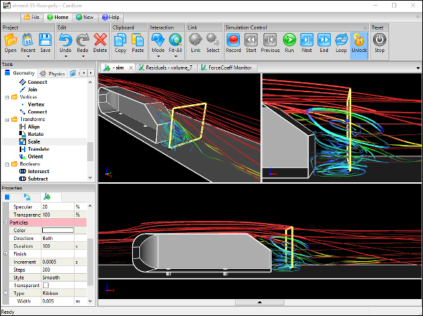

Meshing in a single, integrated simulation environment (e.g., Caedium) for Computational Fluid Dynamics (CFD) is different, in a good way, from meshing in a dedicated mesh or post-processing tool. An integrated CFD simulation environment has the standard meshing tools, but in addition upstream you have a full geometry engine to create and modify geometry as needed, and downstream you can use the same meshing tools for visualization, such as seeds for streamlines and surfaces for results interpolation. You are not forced into a linear progression through the CFD simulation process, because often it requires multiple visits backwards and forwards (non-linear) through the tool chain to get to a final result. Also the visualization of mesh metrics (e.g., surface mesh quality) is identical to general flow field visualization (e.g., pressure), which minimizes the number of concepts you need to learn.
Single, Integrated CFD Simulation Environment


 Get our Blog feed
Get our Blog feed